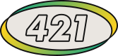

Publicó el manifiesto del Unabomber, archivos de la NSA y las locuras más bellas del underground americano. 40 años de curaduría freak.
Feral House funcionó como un hub de locura para los amantes de 4Chan, cuando Moot estaba todavía en los huevos de su padre.
Adam Parfrey, Manson, conspiraciones nucleares y la curaduría freak más radical de Estados Unidos. Por Ariel Pukacz.